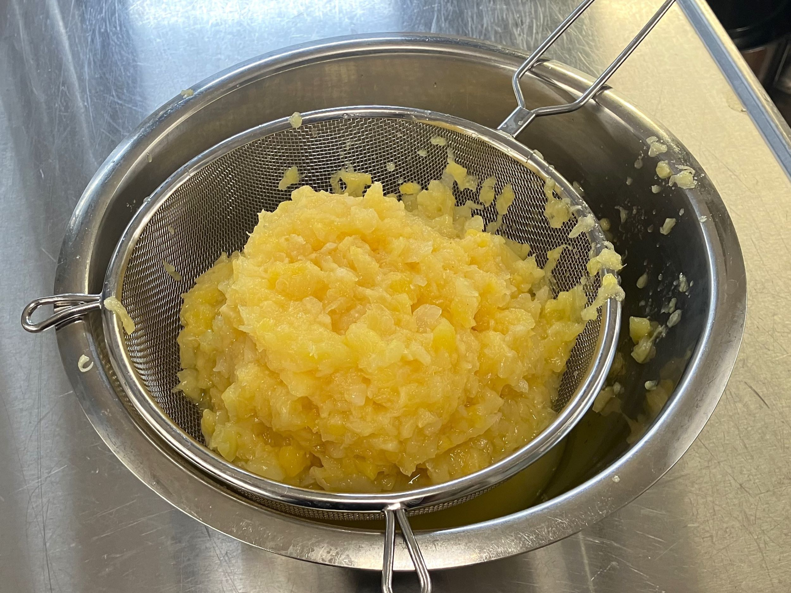

Ingredienser
Pajdeg
- 150 g rumstempererat smör
- 1 dl strösocker
- 3 dl vetemjöl
- 1 tsk bakpulver
Fyllning
- 3 små burkar krossad ananas (à 140 g avrunnen vikt)
- 2 dl crème fraiche
- 1 ägg
- 1 dl strösocker
- 1 tsk vaniljsocker

Gör så här
- Rör ihop rumsvarmt smör med strösocker, vetemjöl och bakpulver.
- Platta ut degen i en pajform på 27 centimeter i diameter.
- Slå av lagen från den krossade ananasen.
-
Blanda ananasen med crème fraiche, ägg, strösocker och vaniljsocker.
- Häll fyllningen i pajskalet.
- Grädda i 175°C på över- och undervärme i 40 minuter.
- Servera med vaniljsås.